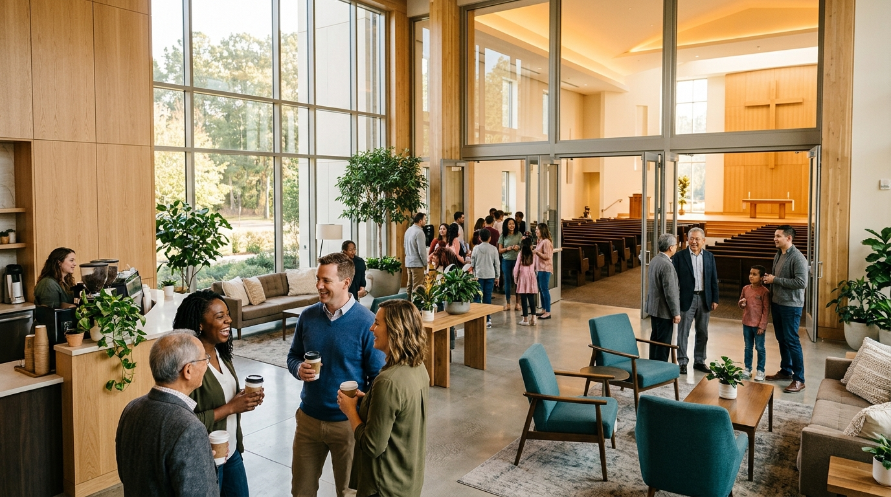
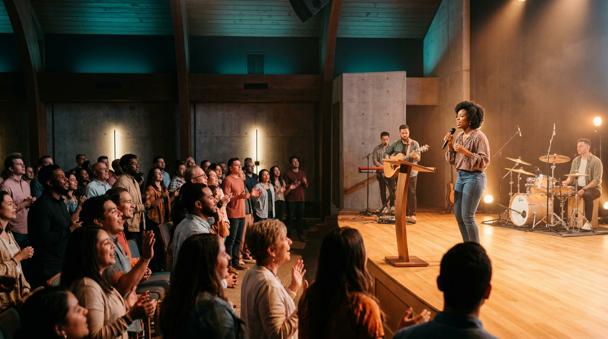

Love God
Passionate Sunday worship and honest, everyday prayer.

Whether you are exploring faith for the first time or looking for a vibrant church home, there is a seat waiting for you at Grace Harbor.
Grace Harbor Church started with a simple desire: to create a joyful, welcoming space where everyday people can encounter God and build lifelong friendships.
Our Sunday gatherings feature uplifting live worship, practical teaching rooted in Scripture, and safe, engaging environments for kids and students.
Passionate Sunday worship and honest, everyday prayer.
Life-giving small groups around tables across our city.
Practical generosity partnering with local schools & shelters.
From toddlers to young adults and community volunteers, find where your gifts come alive.
Creative Bible stories, music, and hands-on activities designed for nursery through 5th grade in a secure check-in wing.
A high-energy night of games, worship, and honest small-group conversations for middle and high school students.
Share meals, study Sunday's message, and support one another in neighborhood gatherings throughout the week.
Show tangible love to our neighborhood through food pantry drives, park cleanups, and tutoring partnerships.

Latest MessagePastor Caleb Mercer walks through how steady faith and grounded community carry us through life's most unpredictable seasons.
Pastor Caleb Mercer • Nov 15, 2026 • 31 min
Pastor Elena Cruz • Nov 8, 2026 • 29 min
Pastor Caleb Mercer • Nov 1, 2026 • 36 min
Jump into church life this month. Reserve your spot in seconds.
New to Grace Harbor? Enjoy a free lunch with our pastors and meet friendly faces after the 11:00 AM service.
Partner with our City Serve Team to pack warm winter essentials and groceries for 150 local families.
An evening of acoustic worship, Scripture reading, and quiet reflection for the whole family.
Have a question about Sunday services, want to join a small group, or need someone to pray with you this week? Send us a note—our pastoral team reads every message.
Let us know you're coming so a friendly host can meet you at the front doors and help with Harbor Kids check-in.
Pastor Caleb Mercer
Interactive preview player for offline demonstration.